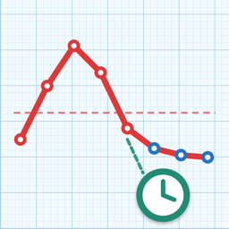

熱が下がって何時間か分かる体温メモ
熱が下がってから、何時間たったか。
家族ごとに体温を記録します。熱の線（はじめは 37.5℃）より下の記録が続いている時間を「熱が下がって 18時間20分」と大きく出し、目安の時間（24・48・72時間）まであと何時間かと、その時刻を出します。
- 熱が下がって何時間。熱の線以上の記録のあと、線より下になった最初の記録から今までの時間。また熱が出たら数え直します
- 目安の時間まで。「目安の 24時間 まで あと 5時間40分（あした 9:15）」
- 熱が出て何時間。熱が続いているときは、はじまりからの時間と、いちばん高い体温
- この3日の線（熱の線・印のある記録）。薬・受診・せき・はなみず・吐いた の印とメモ。数字は回すだけで入ります。家族はいくつでも
- このアプリは医療の判断をしません。登園・登校・受診の決まりは、園や学校・お医者さんに確かめてください
- 登録・課金はありません。記録はこの端末の中だけに保存します。画面のいちばん下に小さな広告が出ます（文字を打っている間は出しません。画面いっぱいの広告・動画の広告は出しません）